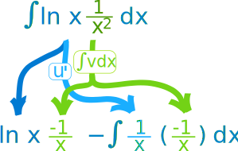
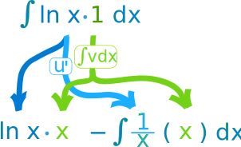
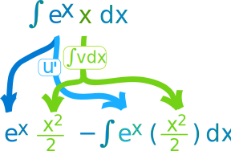
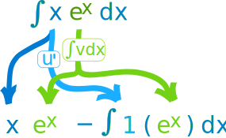

Integration by Parts
Integration by Parts is a special method of integration that is often useful when two functions are multiplied together, but is also helpful in other ways.
You will see plenty of examples soon, but first let us see the rule:
∫u v dx = u∫v dx −∫u' (∫v dx) dx
- u is the function u(x)
- v is the function v(x)
- u' is the derivative of the function u(x)
The rule as a diagram:

Let's get straight into an example:
Example: What is ∫x cos(x) dx ?
OK, we have x multiplied by cos(x), so integration by parts is a good choice.
First choose which functions for u and v:
- u = x
- v = cos(x)
So now it is in the format ∫u v dx we can proceed:
Differentiate u: u' = x' = 1
Integrate v: ∫v dx = ∫cos(x) dx = sin(x) (see Integration Rules)
Now we can put it together:

Simplify and solve:
Done!
So we followed these steps:
- Choose u and v
- Differentiate u: u'
- Integrate v: ∫v dx
- Put u, u' and ∫v dx into: u∫v dx −∫u' (∫v dx) dx
- Simplify and solve
In English we can say that ∫u v dx becomes:
(u integral v) minus integral of (derivative u, integral v)
Let's try some more examples:
Example: What is ∫ln(x)/x2 dx ?
First choose u and v:
- u = ln(x)
- v = 1/x2
Differentiate u: ln(x)' = 1x
Integrate v: ∫1/x2 dx = ∫x-2 dx = −x-1 = −1x (by the power rule)
Now put it together:

Simplify:
Example: What is ∫ln(x) dx ?
But there is only one function! How do we choose u and v ?
Hey! We can just choose v as being "1":
- u = ln(x)
- v = 1
Differentiate u: ln(x)' = 1/x
Integrate v: ∫1 dx = x
Now put it together:

Simplify:
Example: What is ∫ex x dx ?
Choose u and v:
- u = ex
- v = x
Differentiate u: (ex)' = ex
Integrate v: ∫x dx = x2/2
Now put it together:

It only got worse!
Well, that was a spectacular disaster.
Maybe we could choose a different u and v?
Example: ∫ex x dx (continued)
Choose u and v differently:
- u = x
- v = ex
Differentiate u: (x)' = 1
Integrate v: ∫ex dx = ex
Now put it together:

Simplify:
The moral of the story: Choose u and v carefully!
Choose a u that gets simpler when you differentiate it and a v that doesn't get any more complicated when you integrate it.
A helpful rule of thumb is I LATE. Choose u based on which of these comes first:
- I: Inverse trigonometric functions such as sin-1(x), cos-1(x), tan-1(x)
- L: Logarithmic functions such as ln(x), log(x)
- A: Algebraic functions such as x2, x3
- T: Trigonometric functions such as sin(x), cos(x), tan (x)
- E: Exponential functions such as ex, 3x
And here is one last (and tricky) example:
Example: ∫ex sin(x) dx
Choose u and v:
- u = sin(x)
- v = ex
Differentiate u: sin(x)' = cos(x)
Integrate v: ∫ex dx = ex
Now put it together:
It looks worse, but let us persist! To find ∫cos(x) ex dx we can use integration by parts again:
Choose u and v:
- u = cos(x)
- v = ex
Differentiate u: cos(x)' = -sin(x)
Integrate v: ∫ex dx = ex
Now put it together:
Simplify:
Now we have the same integral on both sides (except one is subtracted) ...
... so we can bring the right hand integral over to the left and we get:
Simplify:
Definite Integrals
When the integral has an interval like [a, b] we can use either of these:
Where u and v are functions of x, and a and b are the limits on x.
The second version can help us see the relationship between the left and right integrals.See Definite Integrals for more info.
Footnote: Where Did "Integration by Parts" Come From?
It is based on the Product Rule for Derivatives:
Integrate both sides and rearrange:
Some people prefer that last form, but I like to replace v' with w and v with∫w dx which makes the left side simpler: